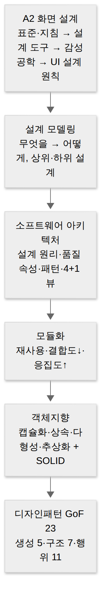
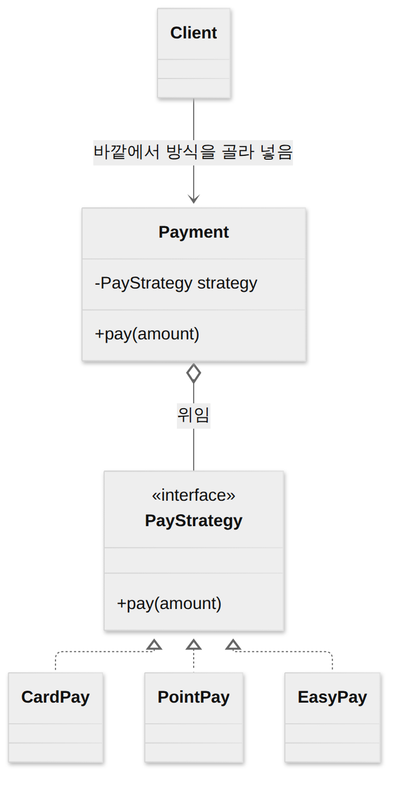
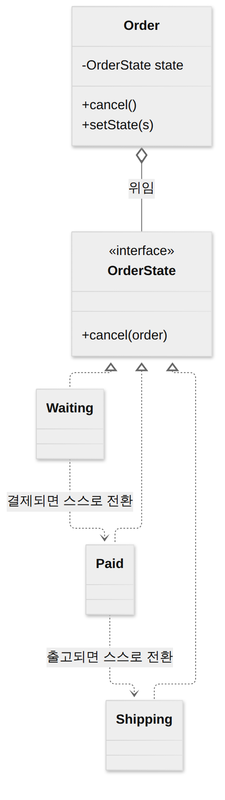

D016 · 2~3주차 주간 종합 복습 — 화면 설계 마무리부터 디자인패턴까지
복습A2A3 이번 주(D010~D014)는 화면 설계(A2)를 감성공학으로 마무리하고, 애플리케이션 설계(A3)를 설계 모델링 → 아키텍처 → 결합도·응집도 → 객체지향 → 디자인패턴 순서로 한 번에 훑었어요. 오늘은 새 진도 없이, 한 주 동안 배운 것을 하나의 이야기로 다시 꿰고, 그동안 헷갈렸던 짝을 정면으로 비교해요. 새로 외울 건 없어요. 이미 본 것을 “왜 이 순서였는지” 알고 나면 기억이 훨씬 오래 가요.
- A2에서 UI 표준과 UI 지침, 설계 도구(와이어프레임·목업·스토리보드·프로토타입), 감성공학 1·2·3류, UI 설계 원칙 4가지를 정의 문장으로 구별할 수 있다
- 설계 모델링(상위·하위 설계, 공통 모듈 명세 원칙)과 소프트웨어 아키텍처(설계 원리, 품질 속성, 패턴, 4+1 뷰)의 관계를 설명할 수 있다
- 결합도 6종(약→강)·응집도 7종(강→약)의 순서와 판정 단서를 문제 상황에 적용할 수 있다
- 객체지향 특징·SOLID와 GoF 디자인패턴(생성 5·구조 7·행위 11)을 구별하고, 특히 상태 vs 전략을 “누가 갈아 끼우나”로 가를 수 있다
- 이번 주 헷갈렸던 짝(표준/지침, 유효성/유연성, 일반화/실체화, 상태/전략)을 스스로 설명할 수 있다
1. 이번 주 지도 — A2에서 A3로
지난주(D009)까지는 “사용자가 무엇을 원하나”(요구사항, A1)와 “화면은 어떻게 생겨야 하나”(UI, A2)를 다뤘어요. 이번 주는 그 화면 이야기를 마저 끝내고, 화면 뒤에서 실제로 일을 할 프로그램을 설계하는 A3로 넘어갔어요. A3 안의 순서도 아무렇게나 정한 게 아니에요. 건물로 치면 먼저 설계도의 방향(설계 모델링)을 정하고, 기둥과 층 구조(아키텍처)를 세우고, 방을 어떻게 나눌지(모듈화·결합도·응집도)를 정한 뒤, 방 안의 가구 배치(객체지향)와 자주 쓰는 인테리어 정석(디자인패턴)으로 내려가요. 큰 것에서 작은 것으로, 시험 범위도 딱 이 방향이에요.

그림을 위에서 아래로 읽으면, 아래로 갈수록 “한 번에 보는 범위”가 좁아져요. 아키텍처 패턴(MVC·레이어 등)은 시스템 전체의 모양이고, 디자인패턴은 클래스 몇 개의 모양이에요. 이 규모 차이가 “MVC는 GoF 패턴이다(✕)” 같은 함정의 정체예요.
2. A2 화면 설계 다시 보기
A3로 넘어가기 전에, 화면 설계에서 시험이 노리는 네 덩어리를 정리해요. 공통점이 하나 있어요. 넷 다 이름이 비슷한 짝을 섞어서 내요. 그래서 이 섹션은 각 개념을 “무엇과 헷갈리나”까지 붙여서 설명해요.
UI 표준 vs UI 지침 — 규약과 가이드라인
한 시스템의 화면을 여러 사람이 나눠 만들면, 어떤 화면은 저장 버튼이 오른쪽 위에 있고 어떤 화면은 왼쪽 아래에 있는 일이 생겨요. 이걸 막으려고 두 가지 문서를 둬요. UI 표준은 전체 시스템의 모든 화면에 공통으로 적용할 규약이에요. 화면 구성(레이아웃·버튼 위치)과 화면 간 이동 방식이 여기 들어가요. UI 지침은 UI 요구사항·구현 제약 등 개발 과정에서 지켜야 할 공통 조건(가이드라인)이에요. 일부 자료는 “표준 = 강제, 지침 = 권고”로 설명하기도 해요. 시험은 정의 키워드로 갈라요. “전체 화면 공통·화면 구성·화면 간 이동”이 보이면 표준, “개발 과정에서 지킬 조건·가이드라인”이 보이면 지침이에요.
현업으로 치면 UI 표준은 디자인 시스템의 컴포넌트 규격서, UI 지침은 “모달은 두 겹 이상 띄우지 말 것” 같은 팀 위키 가이드에 가까워요. 둘 다 위키 어딘가에 있고, 둘 다 신규 입사자가 제일 늦게 읽는 문서라는 공통점도 있어요.
UI 설계 도구 — 보기가 진해지고, 동작이 생기고
화면을 실제로 만들기 전에 모형을 먼저 만드는 이유는, 코드로 만든 뒤에 “버튼이 여기 있으면 안 되는데요”를 들으면 비싸기 때문이에요. 모형은 두 축으로 구별해요. 하나는 충실도(얼마나 실물처럼 보이나), 다른 하나는 동작(누르면 반응하나)이에요. 와이어프레임은 선과 박스로 레이아웃 뼈대만 잡은 정적 모형이에요. 목업은 색·글꼴·이미지까지 입혀 실물처럼 보이지만 여전히 눌리지 않는 정적 모형이에요. 프로토타입은 클릭·화면 전환 같은 인터랙션을 넣어 실제처럼 동작하게 만든 동적 모형이라 사용성 테스트에 써요. 스토리보드는 성격이 달라요. 화면 그림 옆에 정책·기능 설명·DB 연동 정보(Description)를 묶은 최종 설계 문서로, 개발자·디자이너가 함께 참고해요.
정리하면 와이어프레임 → 목업은 “보기”가 진해지는 것이고, 목업 → 프로토타입은 “동작”이 생기는 거예요. 목업과 프로토타입은 겉모습이 똑같을 수 있어서, 문제에 “클릭·화면 전환·시뮬레이션”이 보이면 망설이지 말고 프로토타입이에요.
감성공학 1·2·3류 — 말, 마음, 몸
감성공학은 사람이 제품에서 느끼는 감성(고급스럽다, 답답하다…)을 정성·정량적으로 측정·분석해서 제품·UI 설계에 반영하는 인간 중심 설계 기술이에요. 측정하는 방법에 따라 세 갈래로 나눠요. 1류는 형용사·감성 어휘로 이미지를 조사해 설계로 옮기는 방법이에요(“세련된” 같은 말). 2류는 같은 어휘라도 개인 특성·생활 방식·문화 같은 심리적 특성을 반영해 해석해요(마음). 3류는 심박·근전도 같은 공학적 감각 측정과 수학적 모델로 감성을 객관 지표로 바꿔요(생리적, 몸).
출제자가 제일 좋아하는 건 2류와 3류의 설명을 맞바꾸는 거예요. “2류 = 생리적 측정”이라고 써 놓고, 수험생이 ‘2’와 ‘생’이 둘 다 익숙해서 고개를 끄덕이기를 기다려요. 심리는 2류, 생리는 3류. 센서가 등장하면 무조건 3류예요.
UI 설계 원칙 4가지 — 직관성·유효성·학습성·유연성
좋은 UI인지 판단하는 기준이 넷 있어요. 직관성은 처음 보는 사용자도 설명 없이 바로 이해하고 쓸 수 있어야 한다는 원칙이에요. 유효성은 사용자가 하려는 목적을 정확하고 완전하게 달성할 수 있어야 한다는 원칙이에요. 학습성은 초보자도 쉽게 배우고 오래 기억할 수 있어야 한다는 원칙이에요. 유연성은 마우스·키보드·터치 같은 다양한 조작 방식을 받아들이고, 사용자의 실수를 막거나 되돌릴 수 있어야 한다는 원칙이에요.
이번 주 오답 노트의 단골이 바로 여기예요(D007-2, D009-7). 유효성과 유연성이 둘 다 ‘유’로 시작해서 그래요. 구분은 결과냐 과정이냐로 해요. 유효성은 일이 끝났는지(효과), 유연성은 과정에서 사람을 봐주는지(포용·실수 방지)예요. 실행 취소(Ctrl+Z)가 있는 화면은 유연성 점수를 따고, 결제 버튼을 눌렀는데 실제로 결제가 끝나는 화면은 유효성 점수를 따요. 당연한 것 같지만, 후자가 안 되는 화면도 세상엔 생각보다 많아요.
한 장 요약 — A2에서 문제에 나오는 키워드와 짝이에요.
| 문제 속 키워드 | 정답 | 헷갈리는 짝 |
|---|---|---|
| 전체 화면 공통, 화면 구성·이동 규약 | UI 표준 | UI 지침(개발 과정에서 지킬 조건) |
| 선·박스 뼈대 / 실물 같지만 안 눌림 | 와이어프레임 / 목업 | 프로토타입(클릭·전환 동작) |
| 화면 + 정책·기능·DB 설명을 묶은 최종 문서 | 스토리보드 | 목업(그림만) |
| 형용사 어휘 / 심리·문화 / 생리 측정 | 감성공학 1류 / 2류 / 3류 | 2류·3류 설명 바꿔치기 |
| 목적을 정확·완전하게 달성 | 유효성 | 유연성(다양한 조작·실수 방지) |
3. 설계 모델링 — “무엇을”에서 “어떻게”로
화면까지 정했으면, 이제 요구사항(A1)이 말하는 “무엇을”을 프로그램이 “어떻게” 해낼지로 바꿔야 해요. 이 변환 작업의 청사진이 설계 모델링이에요. 구성 요소와 그 관계를 그리면 구조 모델링, 데이터가 흐르고 변환·저장되는 방식을 그리면 행위 모델링이에요.
설계는 두 층으로 나눠요. 상위 설계(예비 설계)는 아키텍처·인터페이스처럼 시스템 전체의 골격을 정하는 단계이고, 하위 설계(상세 설계)는 각 모듈 내부의 알고리즘·로직을 구체화하는 단계예요. 상위 설계가 “서비스를 몇 개로 나누고 어떻게 통신하나”라면, 하위 설계는 “이 함수 안에서 루프를 어떻게 돌리나”예요. (자료구조 설계는 자료마다 상위·하위로 엇갈리니, 단정하는 선지는 조심해요.)
여러 모듈이 함께 쓰는 공통 모듈은 명세를 특히 잘 써야 해요. 한 번 잘못 쓰면 모든 곳에 퍼지니까요. 명세 원칙은 다섯 가지예요. 정확성(실제 시스템 구현 시 필요한 기능인지 정확히), 명확성(한 가지로만 해석되게), 완전성(필요한 것을 빠짐없이), 일관성(공통 기능끼리 서로 충돌하지 않게), 추적성(요구사항 출처·관련 시스템을 추적할 수 있게)이에요. 이름이 A1의 요구사항 명세 품질과 겹쳐서 섞이기 쉬운데, 공통 모듈 문제에서는 정의 문구로 골라요.
4. 소프트웨어 아키텍처 — 시스템의 골격
설계 모델링에서 상위 설계의 핵심이 바로 아키텍처예요. 소프트웨어 아키텍처는 소프트웨어의 골격이 되는 기본 구조로, 구성 요소 + 구성 요소 간 관계 + 설계·진화를 이끄는 원칙의 집합이에요. 성능·보안 같은 비기능 요구사항을 반영하는 가장 이른 설계 결정이라, 나중에 바꾸기가 제일 비싸요. “일단 모놀리스로 가고 나중에 쪼개죠”라는 회의록이 몇 년째 그대로인 이유이기도 해요.
설계 원리는 네 가지예요. 모듈화(기능 단위로 나누기), 추상화(공통·본질만 남기기 — 과정·데이터·제어 추상화), 단계적 분해(Wirth가 제안한 하향식으로 점점 구체화), 정보 은닉(다른 모듈이 몰라도 되는 내부를 감추기)이에요. 품질 속성은 세 측면으로 나눠요. 시스템이 돌아갈 때의 품질(성능·보안·가용성 등)은 시스템 측면, 돈과 일정의 품질(시장 적시성·비용·예상 수명)은 비즈니스 측면, 설계 자체의 품질(개념적 무결성·정확성·구축 가능성)은 아키텍처 측면이에요.
아키텍처 패턴은 자주 쓰는 골격의 정석이에요. 레이어(계층을 위아래로 쌓기), 클라이언트-서버(서버 하나·클라이언트 여럿), 파이프-필터(데이터가 필터를 차례로 통과 — 리눅스 |), MVC(입력·데이터·표시 3분할, 모델 하나·뷰 여럿), 마스터-슬레이브(마스터가 일을 나눠 주고 결과를 모음), 브로커(중개자가 요청에 맞는 서버를 찾아 연결), 피어-투-피어(각 노드가 클라이언트이자 서버), 이벤트 버스(발행자가 채널에 메시지를 내보내면 구독자들이 받음)가 있어요. 브로커와 이벤트 버스는 둘 다 “가운데에 뭔가 있다”는 점이 닮았어요. 브로커는 요청-응답을 연결해 주고, 이벤트 버스는 발행자가 누가 받는지 모른 채 던지면 끝이에요. Kafka 토픽에 메시지를 넣는 프로듀서가 컨슈머 목록을 몰라도 되는 것과 같아요.
마지막으로 4+1 뷰는 아키텍처를 이해관계자마다 다른 시선으로 보게 해요. +1이 유스케이스 뷰(나머지 넷을 묶는 중심)이고, 넷은 논리 뷰·프로세스 뷰·구현 뷰·배포 뷰예요.
5. 모듈화 — 결합도는 낮게, 응집도는 높게
아키텍처가 골격을 정했으면, 이제 그 골격을 채우는 모듈이 잘 나뉘었는지 따질 차례예요. 모듈을 잘 나누는 이유는 재사용(검증된 것을 다시 써서 시간·비용 절감)과 유지보수(한 곳을 고칠 때 다른 곳이 덜 깨짐) 때문이에요. 좋은 모듈은 모듈 독립성이 높고, 독립성은 두 잣대로 재요. 결합도는 모듈 사이가 얼마나 얽혔나(낮을수록 좋음), 응집도는 모듈 안이 얼마나 한 목적으로 뭉쳤나(높을수록 좋음)예요.
결합도는 약한 것부터 여섯 단계예요. 자료 결합도는 필요한 값만 매개변수로 넘기는 가장 건강한 사이예요. 스탬프 결합도는 배열·레코드 같은 자료 구조를 통째로 넘겨서, 받는 쪽이 안 쓰는 필드 변경에도 영향을 받아요. 제어 결합도는 플래그를 넘겨 상대의 처리 흐름을 조종하는 사이예요. 외부 결합도는 외부에서 정한 데이터 형식·프로토콜을 함께 참조하는 사이예요. 공통 결합도는 전역 변수를 여럿이 함께 쓰는 사이라, 한 군데서 값을 바꾸면 범인 찾기가 시작돼요. 내용 결합도는 다른 모듈의 내부 데이터·코드를 직접 참조하는, 가장 강하고 나쁜 사이예요.
응집도는 강한 것부터 일곱 단계예요. 기능적 응집도는 모든 요소가 단 하나의 기능을 위해 모인 상태예요. 순차적은 한 활동의 출력이 다음 활동의 입력으로 이어지는 요소들이 모인 상태, 교환적(통신적)은 같은 입력·출력을 쓰는 서로 다른 기능이 모인 상태예요. 절차적은 순서대로 실행돼야 해서 모였을 뿐 데이터는 안 주고받는 상태, 시간적은 초기화 루틴처럼 같은 시점에 실행돼서 모인 상태예요. 논리적은 비슷한 종류라서 한데 모아 플래그로 골라 쓰는 상태, 우연적은 아무 관련 없이 그냥 같은 파일에 있는 상태예요. utils.js가 3년 차에 2천 줄이 됐다면, 그건 우연적 응집도가 무럭무럭 자란 거예요.
모듈 구조도에서는 fan-in(나를 부르는 상위 모듈 수, 들어오는 화살표)과 fan-out(내가 부르는 하위 모듈 수, 나가는 화살표)도 셌어요. 공통 모듈은 fan-in을 높이고 fan-out은 줄이는 게 좋은 설계예요. 많이 불리는 건 재사용이 잘 된다는 뜻이고, 너무 많이 부르는 건 혼자 너무 많은 걸 안다는 뜻이니까요.
6. 객체지향 — 모듈 안을 객체로 짜기
모듈을 잘 나누는 기준을 봤으니, 이제 모듈 안을 어떻게 짤지로 내려가요. 객체지향은 데이터와 그 데이터를 다루는 함수를 객체 하나로 묶어, 현실의 사물처럼 서로 메시지를 주고받으며 일하게 하는 방식이에요. 클래스는 공통 속성·연산을 가진 객체의 틀이고, 인스턴스는 그 틀로 찍어 낸 각각의 객체예요. 메시지는 “이 연산 좀 해 줘”라는 요청, 메서드는 그 연산을 구현한 함수예요.
특징은 캡상다추 넷에 정보 은닉을 더해요. 캡슐화는 데이터와 함수를 하나로 묶는 것, 정보 은닉은 내부를 감추고 공개된 메서드로만 접근하게 하는 것이에요(묶기와 감추기를 바꿔 쓴 선지가 단골). 상속은 상위 클래스의 속성·연산을 하위 클래스가 물려받는 것, 다형성은 같은 메시지에 객체마다 다르게 응답하는 성질, 추상화는 공통·본질만 남기고 세부를 감추는 거예요.
다형성을 코드로 실현하는 방법이 두 가지인데, 이름이 한 글자 차이라 시험이 아주 좋아해요. 오버로딩은 한 클래스 안에 이름은 같고 매개변수(개수·타입)가 다른 메서드를 여러 개 두는 거예요. 오버라이딩은 상속받은 부모 메서드를 자식이 같은 시그니처로 다시 정의해 덮어쓰는 거예요. 자바의 println(int)·println(String)이 오버로딩, toString()을 재정의하는 게 오버라이딩이에요.
객체를 잘 나누는 원칙이 SOLID예요. SRP(단일 책임)는 클래스는 하나의 책임만, 즉 바뀌는 이유가 하나뿐이어야 한다는 원칙이에요. OCP(개방-폐쇄)는 확장에는 열려 있고 수정에는 닫혀 있어야 한다는 원칙, LSP(리스코프 치환)는 자식 클래스는 언제나 부모 클래스를 대체할 수 있어야 한다는 원칙이에요. ISP(인터페이스 분리)는 클라이언트가 쓰지 않는 메서드에 의존하지 않도록 인터페이스를 잘게 나누라는 원칙, DIP(의존 역전)는 구체 클래스가 아니라 추상(인터페이스)에 의존하라는 원칙이에요. 스프링에서 @Autowired로 인터페이스 타입을 주입받는 게 DIP를 매일 실천하는 장면이에요. 그리고 SOLID를 지키면 자연스럽게 결합도는 내려가고 응집도는 올라가요. 5장과 6장이 같은 이야기를 다른 높이에서 한 셈이에요.
7. 디자인패턴 GoF — 자주 만나는 설계 문제의 정석
SOLID를 지키며 코드를 짜다 보면, 비슷한 설계 문제를 계속 만나요. “객체를 하나만 만들고 싶다”, “안 맞는 인터페이스를 맞추고 싶다”, “상태가 바뀌면 알려 주고 싶다” 같은 것들이요. 이렇게 반복되는 문제에 대한 검증된 해법을 정형화한 게 디자인패턴이에요. 감마·헬름·존슨·블리시디스 네 사람(GoF)이 1994년 책에 23개를 정리했고, 목적에 따라 셋으로 나눠요. 객체를 만드는 문제는 생성 5개, 객체를 조립하고 감싸는 문제는 구조 7개, 객체끼리 책임을 나누고 협력하는 문제는 행위 11개예요.
생성 패턴은 싱글턴(인스턴스 딱 하나), 팩토리 메서드(생성할 객체를 서브클래스가 결정), 추상 팩토리(관련 객체 군을 한꺼번에 생성), 빌더(복잡한 객체를 단계별로 조립), 프로토타입(기존 객체를 복제)이에요. 구조 패턴은 어댑터(안 맞는 인터페이스 변환), 브리지(추상과 구현을 처음부터 분리), 컴포지트(부분-전체를 트리로), 데코레이터(한 겹씩 감싸 기능 추가), 퍼사드(복잡한 하위 시스템 앞의 단순한 창구), 플라이웨이트(공유로 메모리 절약), 프록시(대리인이 접근 제어)예요. 이름만 보면 추상 팩토리는 구조 같고 프록시는 행위 같아서, 출제자가 이걸 노려요. 감으로 고르지 말고 두문자로 확인해요.
행위 패턴 11개 중 이번 주에 제일 많이 다룬 건 상태와 전략이에요. 두 패턴은 클래스 그림이 거의 똑같아요. 공통 인터페이스가 하나 있고, 그걸 구현한 클래스가 여럿 있고, 원래 객체는 그중 하나를 들고 있다가 처리를 위임해요. 차이는 딱 하나, 누가 갈아 끼우나예요.

전략(Strategy)은 알고리즘을 통째로 캡슐화해 두고, 바깥(클라이언트)이 상황에 맞는 걸 골라 끼워 주는 패턴이에요. 위 그림에서 결제 방식(카드·포인트·간편결제)은 사용자가 고르고, Payment는 받은 전략이 무엇인지 몰라도 그냥 위임해요. 정렬 기준을 Comparator로 넘기는 것도 전략이에요.

상태(State)는 객체의 상태마다 클래스를 하나씩 만들고, 현재 상태 객체에 처리를 맡기는 패턴이에요. 핵심은 상태 전환이 객체 안에서 일어난다는 거예요. 결제 대기 상태에서 결제가 끝나면 상태 객체가 스스로 다음 상태(결제 완료)로 바꿔 끼우고, 그래서 같은 cancel()을 불러도 행동이 저절로 달라져요. 바깥은 지금 무슨 상태인지 몰라도 돼요. 커다란 switch(status)가 메서드마다 복사돼 있는 코드를 본 적 있다면, 그게 상태 패턴이 구하러 오는 장면이에요.
하나 더, 템플릿 메서드도 이 둘과 섞여 나와요. 템플릿 메서드는 상위 클래스가 처리 순서(골격)를 고정하고, 하위 클래스가 일부 단계만 채우는 상속 구조예요. 실행 중에 객체를 갈아 끼우지 않아요. 그래서 문제에 “실행 중 교체”가 나오면 템플릿 메서드는 빼고, 남은 둘 중에서 “바깥이 고르면 전략, 스스로 바뀌면 상태”로 가르면 돼요.
8. 이번 주 헷갈린 짝 — 한 번에 비교
여기까지 오면 이번 주 오답이 왜 나왔는지 보여요. 거의 다 모양이 닮은 짝이었어요. 이름이 닮았거나(유효성/유연성, 오버로딩/오버라이딩), 그림이 닮았거나(일반화/실체화, 상태/전략), 정의 문장이 닮았거나(표준/지침, 캡슐화/정보 은닉)예요. 이런 짝은 각자 따로 외우면 시험장에서 둘 다 그럴듯해 보여요. 그래서 가르는 질문 하나를 같이 외우는 게 효과적이에요.
일반화와 실체화는 D002·D009에서 본 UML 기호예요. 둘 다 빈 삼각형 화살표를 쓰는데, 일반화(상속, is-a)는 실선, 실체화(인터페이스 구현)는 점선이에요. 위의 상태·전략 그림에서도 인터페이스를 구현하는 화살표(<|..)가 점선 + 빈 삼각형, 즉 실체화예요. 오버라이딩 그림의 Dog → Animal은 실선 + 빈 삼각형, 일반화예요. 한 페이지 안에서 두 기호를 다 본 셈이에요.
한 장 요약 — 짝마다 가르는 질문이에요.
| 헷갈리는 짝 | 가르는 질문 | 답 |
|---|---|---|
| UI 표준 / UI 지침 | 전체 화면 공통 규약인가, 개발 과정의 조건인가? | 규약 = 표준, 조건 = 지침 |
| 유효성 / 유연성 | 결과(목적 달성)인가, 과정(포용·실수 방지)인가? | 결과 = 유효, 과정 = 유연 |
| 감성공학 2류 / 3류 | 심리인가, 생리(센서)인가? | 심리 = 2류, 생리 = 3류 |
| 일반화 / 실체화 | 선이 실선인가, 점선인가? | 실선 = 일반화, 점선 = 실체화 |
| 캡슐화 / 정보 은닉 | 묶는가, 감추는가? | 묶기 = 캡슐화, 감추기 = 은닉 |
| 오버로딩 / 오버라이딩 | 한 클래스 안인가, 상속 관계인가? | 한 클래스 = 로딩, 상속 = 라이딩 |
| 상태 / 전략 | 누가 갈아 끼우나? | 스스로 = 상태, 바깥 = 전략 |
9. 오답 복습 — D014-2 상태 패턴 (D+1)
어제 D014 2번에서 “단계마다 클래스를 두고, 지금 단계 객체에 처리를 맡기고, 단계가 바뀌면 다음 단계 객체로 갈아 끼워 행동이 저절로 달라지는” 설계를 전략으로 골랐어요(처음엔 템플릿 메서드). 7장 그림에서 봤듯이 전략과 상태는 클래스 구조가 쌍둥이라 그림만 보고는 못 가려요. 문장에서 단서를 찾아야 해요. “단계가 바뀌면”, “행동이 저절로 달라짐”은 객체가 스스로 상태를 전환한다는 뜻이라 상태 패턴이에요. 반대로 “사용자가 고른”, “상황에 맞는 알고리즘을 선택해 넣는”이 나오면 전략이에요. 오늘 확인 문제 10번에서 방향을 바꿔 다시 물어볼게요.
확인 문제 (채점 완료 · 9/10)
- 개발 과정에서 지켜야 할 공통 조건으로, UI 요구사항·구현 제약 등을 정리한 가이드라인은?
정답·해설
① UI 지침. “개발 과정에서 지킬 공통 조건·가이드라인”이면 지침, “전체 화면 공통 규약(화면 구성·이동)”이면 표준이에요. - 사용자의 심박·근전도 같은 생리 반응을 측정하고 수학적 모델로 분석해 감성을 객관적 지표로 바꾸는 방법은?
정답·해설
③ 감성공학 3류. 생리 반응·센서·수학적 모델이면 3류, 심리·문화는 2류, 형용사 어휘는 1류예요. - 클릭·화면 전환 같은 인터랙션을 넣어 실제 서비스처럼 동작하게 만들고 사용성 테스트에 쓰는 모형은?
정답·해설
④ 프로토타입. 클릭·화면 전환으로 동작하면 프로토타입이에요. 와이어프레임·목업은 정적, 스토리보드는 설명을 묶은 문서예요. - 공통 모듈 명세 원칙 중 “공통 기능들 사이에 서로 충돌이 없어야 한다”에 해당하는 것은?
정답·해설
④ 일관성. “공통 기능끼리 충돌 없음” = 일관성(정명완일추). - 발행자가 채널에 메시지를 내보내면, 발행자는 누가 받는지 모른 채 그 채널을 구독한 컴포넌트들이 메시지를 받아 처리하는 아키텍처 패턴은?
정답·해설
② 이벤트 버스. 발행자가 수신자를 모른 채 채널에 던지면 구독자가 받아요. 브로커는 요청에 맞는 서버를 찾아 연결해 주는 요청-응답 구조예요. - 결합도를 강한 것에서 약한 것 순으로 바르게 나열한 것은?
정답·해설 (오답 기록됨)
① 내용 → 공통 → 외부 → 제어 → 스탬프 → 자료. 고른 ②는 같은 여섯 개를 약 → 강으로 읽은 순서(자스제외공내)예요. 문제의 방향 단어가 “강한 것에서 약한 것”이라 거꾸로(내공외제스자) 읽어야 해요. 출제자가 가장 좋아하는 함정이 바로 “순서는 맞는데 방향이 반대”인 선지예요. - 한 모듈 안에서 어떤 활동의 출력 데이터가 다음 활동의 입력으로 쓰이는 요소들이 모인 응집도는?
정답·해설
② 순차적 응집도. 출력 → 다음 입력이면 순차적, 같은 입력·출력이면 교환적, 순서만 있으면 절차적이에요. - “자식 클래스는 언제나 부모 클래스를 대체할 수 있어야 한다”는 SOLID 원칙은?
정답·해설
③ LSP(리스코프 치환). 자식이 부모 자리에 들어가도 문제없어야 해요. - 다음 중 GoF 디자인패턴의 생성 패턴에 해당하는 것은?
정답·해설
② 추상 팩토리. 생성 패턴(추빌팩프싱)이에요. 어댑터·프록시는 구조, 옵저버는 행위예요. - (오답 재확인) 결제 화면에서 사용자가 카드·포인트·간편결제 중 하나를 고르면, 그 결제 방식을 구현한 객체를 결제 객체에 넣어 준다. 결제 객체는 어떤 방식인지 모른 채 받은 객체에 처리를 맡긴다. 이 설계에 해당하는 패턴은?
정답·해설 (D014-2 재확인 통과)
② 전략. 결제 방식을 사용자(바깥)가 골라 넣어 주고 결제 객체는 위임만 해요. 객체 안에서 스스로 다음 상태로 바뀌었다면 상태 패턴이에요.
고른 뒤 답안 복사 → 디스코드 공부 채널에 붙여넣기 하면 돼요.
답장: 정처기 D016: 1)번호 2)번호 3)번호 4)번호 5)번호 6)번호 7)번호 8)번호 9)번호 10)번호